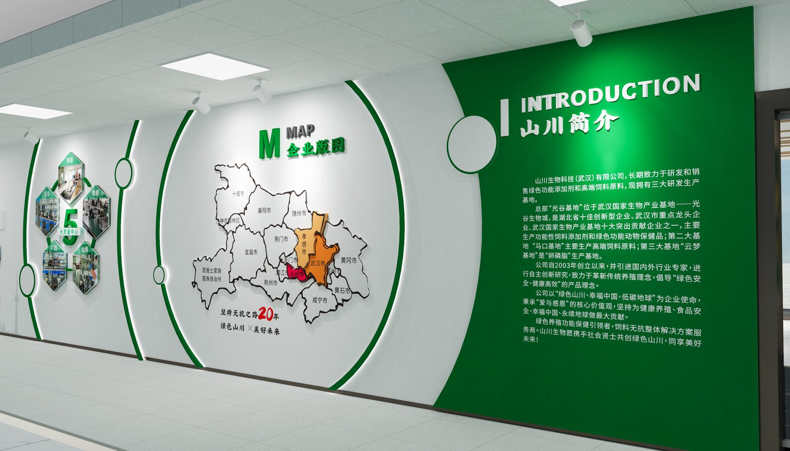
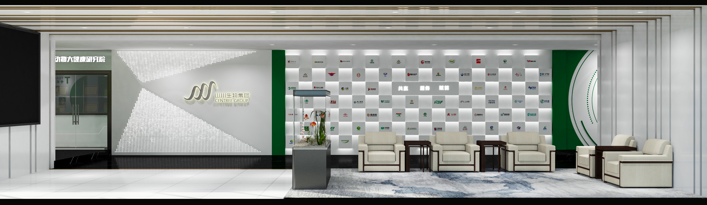
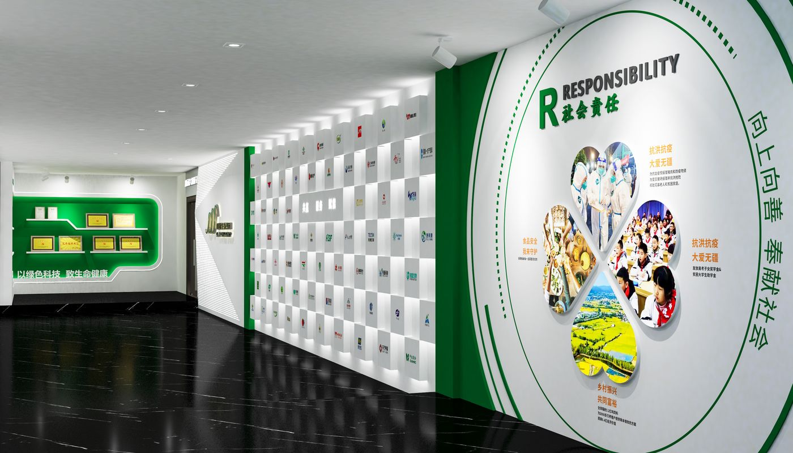
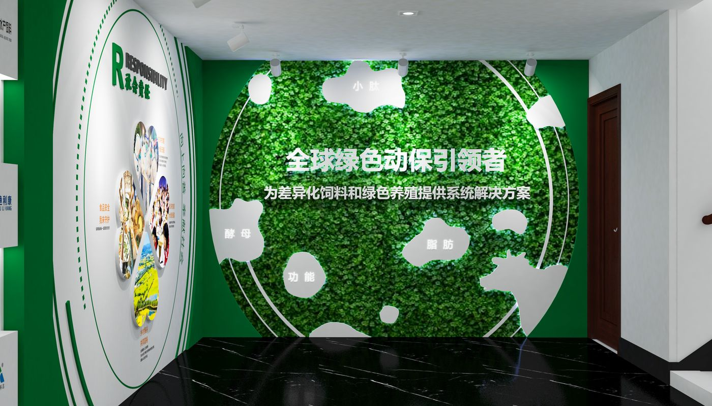
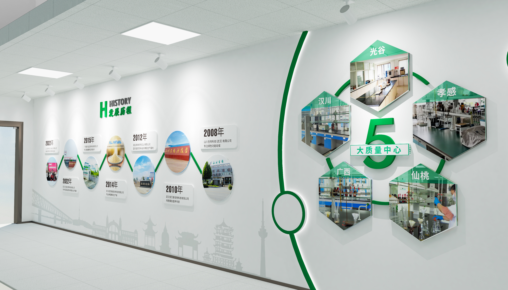

项目案例 / CASE STUDY · 09
山川生物集团前台大厅
SHANCHUAN BIOTECH FRONT HALL

以「山」为设计灵感的企业前台大厅及文化墙，<br>提取山的轮廓与层次，结合绿色光带，将生物科技属性与自然意象融合。
A corporate lobby inspired by mountains — layering mountain silhouettes with green light to blend biotech with nature.
职责定位 / ROLE
概念设计师
CONCEPT DESIGN
工作范围 / SCOPE
前台大厅 · 企业文化墙 · 方案设计
Lobby design · Culture wall · Concept proposal
02 / 空间呈现
大厅整体 / LOBBY OVERVIEW
山形轮廓与绿色光带贯穿空间，打造兼具品牌展示与接待功能的企业门面。

03 / 空间节点
文化墙方案 / CULTURE WALL
以图文编排与色彩层次呈现企业的数字化服务理念与团队文化。<br>图文与色彩层次 · GRAPHIC & COLOR LAYERS


04 / 空间视角
方案呈现 / CONCEPT VIEWS
方案呈现 · SPACE PROPOSALS

05 / 落地呈现
概念方案 / CONCEPT PROPOSAL
本方案为概念提案阶段，尚未进入施工。

项目总结 / PROJECT SUMMARY
自然意象与科技属性，可以在空间中彼此成就。
Nature and technology can reinforce each other within a space.